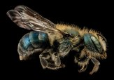

Bumblebees (Genus: Bombus)
Bumblebees get their name from the noise they create when they get
into a flower. They make the noise by moving around inside the flower
so fast that they literally sonicate the pollen off the flower and
onto the hairs on their body. "It's just like they are dancing," said
Griffin. Like the honeybee, the bumblebees you see are female workers
who groom the pollen back and into pollen baskets on their legs. They
live in large colonies in nests they build in the ground in abandoned
mammal holes.
Carpenter bees (Genus: Xylocopa)
Carpenter bees, like
honeybees and bumblebees, have pollen baskets on their legs. They also
have a black body with yellow and black dense hairs on their head and
thorax and a bald abdomen. If you've ever had a bee swoop out of
seemingly nowhere and hover in front of your face looking you straight
in the eye, that's a carpenter bee. Your first thought when this
happens may be that it's about to attack. It's not. It's just being
territorial.

Mason bees (Genus: Osmia)
These are small, fast-flying
bees that have the agility of a tiny fighter jet and have metallic
colors including blue, dull green and black. They do not have pollen
baskets on their legs. Instead, they carry pollen in hairs on the
underside of their abdomens.
Leafcutter bees (Genus: Megachile)
These bees are very
similar to Mason bees in their nesting characteristics except that
they use leaves to close up their nest cavities. They are black with
white hairs covering the thorax and the bottom of the abdomen, and
many species have large heads with massive jaws to aid in cutting off
pieces of leaves to seal their nests. Also like mason bees, they carry
pollen on their abdomens and are very fast flyers.
Blueberry bees (Habropoda laboriosa; Southeastern blueberry bee)
These bees are about the size of a honeybee but have hair
patterns and banding that give them the appearance of a small version
of a bumblebee or a carpenter bee.
They get their name because
they have evolved with native blueberries, and their bodies have
become the perfect fit for the bell-shaped flowers on blueberry
plants. While they are excellent pollinators for blueberries, they
also will pollinate other plants. Blueberry bees nest in the ground,
especially near blueberry plants, once they find them.
Apis Mellifera Mellifera
In northwestern Europe, A. m.
mellifera was the first honey bee to become established until the
introduction of other bee subspecies considered more suited to modern
beekeeping, such as the Buckfast bee a breed of bee whose ancestry
originally included the remnants of the old British black bee (a
strain of A. m. mellifera), which became extinct due to Acarapis
woodi, a tracheal mite.
Apis Mellifera Ligustica
The Italian honey bee is thought to originate from the
continental part of Italy, south of the Alps, and north of Sicily. The
subspecies may have survived the last Ice Age in Italy.It is
genetically a different subspecies than that from the Iberian
peninsula and from Sicily. It is the most widely distributed of all
honey bees, and has proven adaptable to most climates from subtropical
to cool temperate, but it is less successful in humid tropical
regions. It is sometimes called the Ligurian bee.
Apis mellifera caucasica
The Caucasian honey bee originates from the high valleys of the
Central Caucasus. Georgia is the “central homeland” for the
subspecies, although the bees also can be found in eastern Turkey,
Armenia and Azerbaijan.
Apis mellifera carnica
The Carniolan honey bee is a subspecies of the western honey
bee. The Carniolan honey bee is native to Slovenia, southern Austria,
and parts of Croatia, Bosnia and Herzegovina, Serbia, Hungary,
Romania, and Bulgaria.
Buckfast
The Buckfast bee is a breed of honey bee, a cross of many
subspecies and their strains, developed by Brother Adam (born Karl
Kehrle in 1898 in Germany), who was in charge of beekeeping from 1919
at Buckfast Abbey in Devon in the United Kingdom. Breeding of the
Buckfast bee is now done by breeders throughout Europe belonging to
the Federation of European Buckfast Beekeepers.This organisation
maintains a pedigree for Buckfast bees, originating from the time of
Brother Adam.
Apis mellifera vespida (latina)
This is a large group of small bees with some only a quarter of
the size of a honeybee. They have come to be known by the common name
of "sweat bee" because they are attracted to human perspiration. They
are also excellent pollinators and are active into October and even
into November.